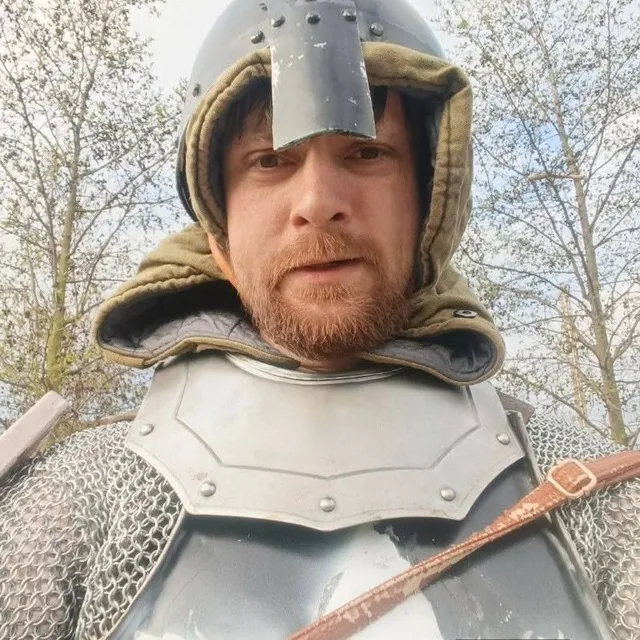

BRNO · VĚDA · VZDĚLÁVÁNÍ · LIDÉ
Za projekty stojí člověk.
Jsem Aliaksei Chareshneu, PhD. Propojuji vědu a technologie s výukou, poznáváním Moravy a komunitními aktivitami. Vyberte si konkrétní spolupráci — každá má vlastní podmínky.
Výzkum, výuka a smysluplné zážitky.
Vystudoval jsem biochemii a získal PhD v biomolekulární chemii a strukturní bioinformatice na Masarykově univerzitě. Pracuji s vědeckými daty, programováním a komunikací složitých témat.
Vedle odborné práce učím jazyky, přírodovědné předměty a IT. V Brně také organizuji výpravy BrnoWalkers a podílím se na aktivitách Družiny Moravy. Přímá výuka, komunitní účast i firemní zakázky mají odlišná pravidla.

🎓 Akademie
Individuální výuka češtiny, angličtiny, přírodních věd, matematiky a programování. Nejdřív cíl, pak rozsah, cena a písemné potvrzení.
Kurzy a témata →🥾 BrnoWalkers
Společné výlety, procházky a poznávání regionu. Veřejné termíny a podmínky každé akce najdete v kalendáři.
Poznat BrnoWalkers →⚔️ Družina Moravy
Historický šerm, LARP, bezpečný vstup do klubu a komunitní akce. Účast na aktivitě není automaticky členstvím spolku.
Poznat Družinu →Právní rozlišení: osobní služby OSVČ Aliaksei Chareshneu a aktivity Družina Moravy, z. s. nejsou jeden právní subjekt. Pořadatel, příjemce platby a podmínky se ověřují u každé konkrétní služby nebo akce.